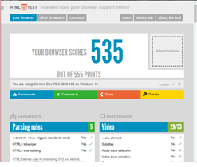

Jorge Andrés López Chávez
A01209043
Para comprender la diferencia entre el Internet y WWW debemos conocer sus propias definiciones. El internet es un sistema de comunicación el cual ofrece a las personas distintos servicios de conexión mientras que WWW es un sistema que funciona gracias al internet, www no es un sistema de conexión si no de transmisión de distintos tipos de datos.
Los de todos de petición dentro del HTTP ayudan para conocer que debe hacer con determinado recurso.
HTTP: GET es el método que sirve para la recuperación de datos.
HTTP: HEAD solo pide encabezado
HTTP: POST este método nos sirve para enviar serie de datos dentro del servidor.
HTTP: PUT el método put remplaza representaciones actuales con carga útil de representación.
HTTP: PATCH nos sirve para modificar de manera parcial a un recurso.
HTTP: DELETE sirve para borrar algún recurso.
Se podría utilizar GET Y POST, las buenas practicas dicen que es mejor utilizar POST ya que es un poco más seguro en cuanto mantener datos no visibles dentro de la URL, Esto claro no significa que en un protocolo HTTP sea seguro si no seria necesario para mayor protección un HTTPS con SSH para cifrar cualquier tipo de Post que se de dentro del servidor.
GET
No necesariamente, ya que los errores dentro de los 4xx casi siempre se dan por errores del cliente, por lo tanto, la página no es encontrada porque puede existir algún error de método o ligamiento entre las páginas.
Si es nuestra culpa, a veces puede ser utlizado como forma de proteccion para que usuarios externos no accedan a informacion que no se asuya.
Significa que han sido implementados de una manera más eficiente y con mayor facilidad que el antiguo uso de dicho atributo. Algunos atributos que han sido desaprobados son: No utilizar Lang or language en el srcipt, por que el script es ASCII cas-insensitive. No utilizar border o algún tipo de style dentro de html, para eso esta CSS. No utilizar maxlenght o size en números. Applet ( utilizar object) Bgsound (utilizar sound) Dir ( utilizar ul)
HTML 5 introduce una serie de nuevos elementos que
ayuda a mejorar la organización dentro de la pagina
web. Section, article, aside, header, footer, son elementos agregados en HTML5.
HTML5 permite uso de elementos SVG y MathML
Elemenots que desaparecen con el cambio a HTML5 son:
Basefont
Big
Center
Bgcolor
(table) Iniciar una tabla
(tr) representa filas
(td) representa celdas
(th) celda de encabezado
(scope) para ver que celdas son afectadas por el encabezado.
Header
Navigation
Section
Article
Aside
Footer
Navegador: Chrome
El ciclo de vida de un sistema de información es un enfoque por fases del análisis y diseño que sostiene que los sistemas son desarrollados de mejor manera mediante el uso de un ciclo especifico de actividades del analista y del usuario.
El ciclo de vida de un sistema de información es un enfoque por fases del análisis y diseño que sostiene que los sistemas son desarrollados de mejor manera mediante el uso de un ciclo especifico de actividades del analista y del usuario.